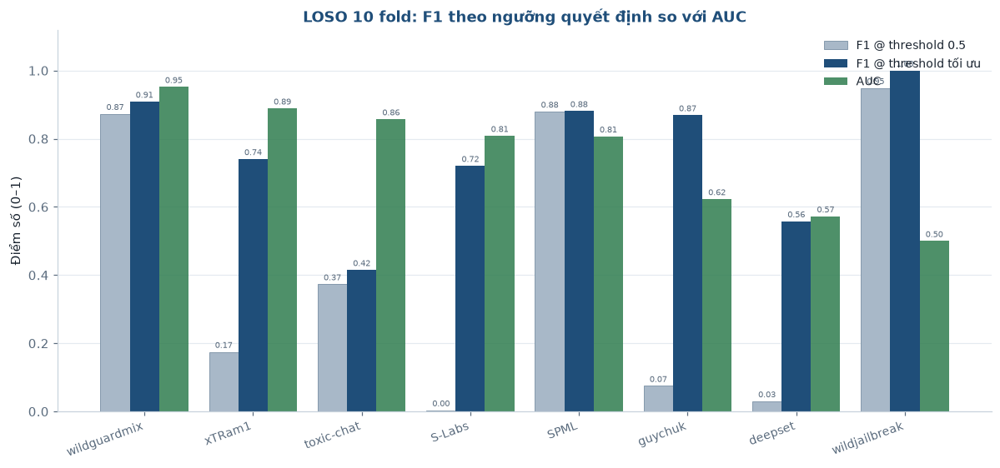

TRƯỜNG ĐẠI HỌC FOM (HUFLIT) — KHOA THỐNG KÊ TÓM TẮT
Phát hiện tấn công Prompt Injection trên hội thoại LLM
Đồ án môn Xử lý dữ liệu lớn (IT252BIDA)
Hệ phân tán Big Data: PySpark · MongoDB · R Language · Prototype ứng dụng
Học viên
Trần Khôi Nguyên (MIT26004)
Lớp
MIT261 — Học trước Thạc sĩ CNTT
Giảng viên hướng dẫn
TS. Võ Thị Hồng Tuyết
Niên khóa
2026
Chương 1 — Ứng dụng & dữ liệu
Môn: IT252BIDA — Xử lý dữ liệu lớn · GV: PhD. Võ Thị Hồng Tuyết
Người thực hiện: Trần Khôi Nguyên (MIT26004) — nhóm 4
1.1 Bài toán
Phát hiện Prompt Injection trong câu lệnh người dùng gửi tới chatbot/LLM.
Prompt Injection là kỹ thuật khiến mô hình ngôn ngữ bỏ qua chỉ dẫn hệ thống và
làm theo chỉ dẫn của kẻ tấn công — ví dụ ép bot bỏ qua filter, tiết lộ system
prompt, hoặc sinh nội dung độc hại.
Bài toán được hiểu là phân loại nhị phân ở mức văn bản:
Nhãn
Ý nghĩa
0 (benign)
Câu lệnh bình thường, không có ý đồ chiếm quyền chỉ dẫn
1 (attack)
Có ý đồ chỉ đạt/lệch chỉ dẫn hệ thống
Không chạy đua SOTA. Mục tiêu là đo trung thực khả năng tổng quát hóa trên
corpus đa nguồn, bằng công cụ Big Data theo đúng đề cương môn.
Ba câu hỏi nghiên cứu
Mã
Câu hỏi
Cách đo
RQ1
Khi train và test cùng phân bố, model phân biệt tốt đến đâu?
Bao nhiêu phần hiệu năng đến từ độ dài thay vì từ vựng?
Ablation unigram + AUC của riêng độ dài (R, pROC)
1.2 Nguồn dữ liệu — 10 nguồn, 3 họ nguồn
#
Nguồn
Dòng (sau dedupe)
Họ
Vai trò
1
allenai/wildguardmix
47,547
adversarial
Nguồn attack lớn nhất + benign đi kèm
2
reshabhs/SPML_Chatbot_Prompt_Injection
16,012
roleplay
Persona/instruction override
3
allenai/WildChat-1M
15,382
benign stream
Hội thoại thật, chỉ benign
4
S-Labs/prompt-injection-dataset
15,108
direct
Prompt injection trực tiếp
5
xTRam1/safe-guard-prompt-injection
10,108
mixed
An toàn + tấn công
6
lmsys/toxic-chat
9,586
jailbreak
Hội thoại thật có nội dung độc hại
7
guychuk/open-prompt-injection
6,583
indirect
Injection qua tài liệu, không trực tiếp
8
lmsys/lmsys-chat-1m
18,531
benign stream
Hội thoại thật, chỉ benign
9
allenai/wildjailbreak
2,206
jailbreak
Adversarial có nhãn mức độc hại
10
deepset/prompt-injections
662
classic
Template injection cổ điển
Tổng
141,725
Điểm quan trọng: 2 nguồn chỉ có benign (WildChat, lmsys) và 1 nguồn
chỉ có attack (wildjailbreak). Vì vậy cross-dataset phải đo FPR (tỉ lệ
bắt nhầm benign) chứ không chỉ F1.
1.2.1 Ba ca hiểu sai nhãn — cùng một dạng lỗi
Đây là phần em muốn nhấn mạnh nhất trong báo cáo, vì nó quyết định chất lượng
toàn bộ kết quả phía sau.
Cách chung: cột tên nghe như nhãn phân loại, nhưng thực chất đo một thứ khác.
Ba ca đều bị phát hiện bằng kiểm tra bằng chứng, không phải bằng cảm tính.
Dataset
Cột
Nghĩa thật
Hậu quả nếu dùng sai
Cách phát hiện
HackAPrompt
labels
prompt đã thắng model mục tiêu (đạt PWNED)
Toàn bộ nhãn đảo nghĩa
715 text có nhiều nhãn khác nhau; 86.21% chứa PWNED
WildJailbreak
label
mức độc hại của prompt
FPR = 1.0 (17/17 benign bị bắt nhầm)
data_type = adversarial_harmful / adversarial_benign — cả hai đều adversarial
SPML
Degree
mức gắn kết với persona
Suy ra sai ý đồ tấn công
Degree=10 ứng với roleplay lành mạnh ("You are a knowledgeable and reliable HealthAI…")
→ HackAPrompt bị loại khỏi corpus (mất 227K dòng nhưng tránh được việc model
học "prompt đã thắng model khác" thay vì "prompt có ý đồ xấu").
→ WildJailbreak: đặt label=1 cho toàn bộ, label cũ chuyển thành severity.
→ SPML: dùng cho hồi quy severity, không dùng làm nguồn nhãn phân loại.
Quy tắc rút ra: trước khi tin một metric bất thường, kiểm tra nhãn trước.
FPR = 1.0 là dấu hiệu chắc chắn nhãn bị hiểu sai, không phải model dở.
Chi tiết đầy đủ: docs/Project/Main/MetErrors/datasets.md.
Vì sao cần lớp 3: nếu một benign và attack của cùng nhóm nằm ở 2 split khác
nhau, model có thể học "biết cặp này" thay vì học đặc trưng của injection.
Kiểm chứng:verification/verify_split.py → 0 rò rỉ trên 3 lớp.
1.3.3 Quy tắc nhãn theo nguồn
Nguồn
split
Lý do
deepset/prompt-injections
unassigned
662 dòng → giữ ngoài mọi split để làm hold-out ngoài
allenai/WildChat-1M, lmsys/lmsys-chat-1m
unassigned
Chỉ benign → dùng đo FPR, không train
allenai/wildjailbreak
unassigned
Chỉ attack → dùng đo recall, không train
7 nguồn còn lại
train/val/test 80/10/10
Theo source
Kết quả split: train 109,543 · validation 12,808 · test 19,374.
1.4 Đặc trưng phân bố — và bẫy độ dài
Lớp
n
mean
median
IQR
benign (label=0)
88,655
406.2
95
[50, 249]
attack (label=1)
53,070
982.8
773
[462, 1403]
Attack dài hơn gấp 8.1× ở median. Đây là điểm khởi đầu của RQ3, và cũng là
cảnh báo lớn nhất về phương pháp (xem Chương 2, mục đo lường).
Theo family: jailbreak dài 6.4× benign, direct3.0×, indirect1.7×.
Family nào càng "bọc ngoài" (roleplay, kịch bản dài) thì càng dài — đây là lý do
mô hình bag-of-words dễ học "template" thay vì "cơ chế".
1.5 Kiểm chứng dữ liệu đầu vào
Script kiểm chứng
Kết quả
verification/verify_split.py
0 rò rỉ 3 lớp
verification/verify_spml.py
16,012 dòng, 0 trùng
verification/verify_hackaprompt.py
227,042 dòng — loại vì nhãn sai nghĩa
verification/verify_attack_sets.py
OK
verification/list_wildjailbreak.py
2,206 dòng, data_type 2 giá trị
Tổng 39 file Python trong repo đều pass syntax + import (tools/patches/smoke_test.py).
Chương 1 — xem tiếp Chương 2 (phương pháp) và Chương 3 (kết quả).
Chương 2 — Phương pháp (kiến trúc & công nghệ)
Môn: IT252BIDA — Xử lý dữ liệu lớn · GV: PhD. Võ Thị Hồng Tuyết
Người thực hiện: Trần Khôi Nguyên (MIT26004) — nhóm 4
2.1 Yêu cầu đề cương và cách ánh xạ
Đề cương môn yêu cầu chuỗi công nghệ cụ thể. Bảng dưới ánh xạ từng yêu cầu
→ thành phần đã triển khai → bằng chứng đo được.
2.2.1 Vì sao tách 2 đường — đây là luận điểm chính
Nếu chỉ dùng MongoDB thì không train được (không có Spark ML trên Mongo).
Nếu chỉ dùng parquet thì mất khả năng truy vấn tương tác, không có prototype,
và không đáp ứng yêu cầu "Database with MongoDB" của đề cương.
Đường
Công nghệ
Dữ liệu
Phù hợp với
Batch
parquet → PySpark
141,725 dòng, 9 cột
Huấn luyện, đào dữ liệu, thống kê toàn bảng
Operational
MongoDB
141,725 doc, +text_len, +inserted_at
Truy vấn có index, dashboard, ghi log sự kiện
Bằng chứng phân định: MongoDB nhanh hơn Spark ở phép aggregation có index
(0.72s vs 2.7s) vì quét index, không quét toàn bảng. Nhưng khi scan toàn bảng
thì Spark mạnh hơn (đọc song song + columnar). Hai engine bổ trợ nhau, không
thay thế.
2.3 Lớp PySpark (batch path)
2.3.1 EDA bằng Spark SQL — src/eda_spark.py
Dùng groupBy + count + avg + length + crosstab thuần Spark SQL.
Kết quả so với pandas:
Phép
Spark
pandas
groupBy(source)
5.89s
0.144s
groupBy(label)
2.02s
—
crosstab(source, label)
2.74s
—
length_by_label
3.88s
0.447s
Tổng
80.67s
2.69s
⇒ Spark chậm hơn pandas ~30× ở 141k dòng. Đây là kết quả trung thực,
không phải lỗi — ở quy mô này overhead khởi tạo session + JVM chiếm ưu thế.
Cùng bộ dữ liệu, 5 phân bố khớp 100% → Spark đọc và tính đúng, chỉ chậm hơn.
Điểm này được ghi thẳng vào báo cáo, không tô đẹp. Nó cũng là lập luận cho
mục 2.7: Spark chỉ bắt đầu thắng khi vượt ngưỡng dữ liệu.
Chọn HashingTF thay vì CountVectorizer vì không cần vocabulary (tránh rò rỉ
từ vectorizer) và chịu được corpus lớn hơn.
So sánh với baseline sklearn (TF-IDF word 1-2 + char_wb 3-5, 120k chiều):
Chỉ số
MLlib
sklearn
Δ
F1 (test)
0.8702
0.9521
−0.0819
AUC
0.9801
0.9922
−0.0121
Accuracy
0.9270
0.9708
−0.0438
Precision
0.9662
0.9614
+0.0048
Recall
0.7915
0.9430
−0.1515
MLlib thua về recall (0.7915 vs 0.9430) — bỏ sót nhiều attack hơn.
2.3.3 Chi phí scale — đo, không đoán
Cấu hình partition (109,543 dòng train, spark.sql.shuffle.partitions thay đổi):
Partition
Fit
s/100k dòng
2
201.59s
184.0
8
211.60s
193.2
32
263.70s
240.7
⇒ Tăng partition làm chậm hơn. Ở 32 partition, mỗi task chỉ ~3,400 dòng
— thấp hơn nhiều so với ngưỡng 100k–200k dòng/task mà Spark khuyến nghị.
Overhead scheduler + mỗi task đọc lại vocabulary của HashingTF.
Nhân bản dữ liệu (unionByName):
Bản sao
Dòng
Fit
s/100k dòng
×1
109,543
192.27s
175.5
×2
219,086
166.91s
76.2 (−57%)
⇒ Nhân bản ×2 nhanh hơn 57% vì tăng số partition → task nhỏ hơn → phân
song song hoá tốt hơn.
Kết luận then chốt: ở 141k dòng, pipeline chỉ có 1 job — chưa tách được
song song. Bắt đầu tách từ 219k dòng. Đó là lý do phải đo trên corpus ~1M
(mục 2.7).
Index phục vụ đúng 3 truy vấn dashboard: lọc theo nhãn+nguồn, theo nguồn+split,
theo family+nhãn, và duyệt theo độ dài.
2.4.2 Kết quả
Chỉ số
Giá trị
Số doc nạp
141,725
Thời gian nạp
20.49s (batch 5,000)
Tốc độ
6,917 docs/s
dataSize
124,850,603 B (≈2.6× parquet 47.6 MB)
Aggregation $group source×label
0.72s (17 nhóm)
Đọc lại bằng PySpark
50,000 doc / 23.29s, +groupBy = 32.86s (12 nhóm)
Kiểm chứng chéo:mongo_matches_parquet = true — số dòng, số nhãn và
phân phối độ dài khớp 100%.
Ghi chú kỹ thuật:coll.drop() xoá cả index → phải tạo lại index sau
khi drop. Và $percentile ở MongoDB 8.0 bắt buộc có method
("approximate") với p là số 0..1 (không phải 0..100).
2.5 Lớp R — thống kê — r/analysis.R
R không đọc parquet → src/export_for_r.py export từ MongoDB ra CSV:
File
Dung lượng
Nội dung
Thời gian
out/r_corpus.csv
102.6 MB
141,725 dòng × 10 cột
7.1s
out/r_summary.csv
2,989 B
47 dòng — source×label×family×split
2.0s
out/r_length_stats.csv
1,176 B
17 dòng — phân phối độ dài
—
R 4.6.1, package jsonlite + pROC.
2.5.1 Kiểm định giả thuyết
Kiểm định
Giả thuyết
Kết quả
Quyết định
Mann-Whitney U (độ dài)
H₀: phân phối độ dài benign = attack
W = 925,758,320, p = 0.0
Bác bỏ H₀
AUC (pROC) của riêng độ dài
—
0.8032
Tín hiệu mạnh, chưa đủ phân loại
Lỗi đã phát hiện và sửa: công thức AUC viết tay bằng rank-sum ban đầu cho
0.3675 (sai). Công thức đúng là 1 − W/maxU; đã verify lại bằng pROC
→ 0.8032 khớp. Đây là bài học: số "trông hợp lý" vẫn có thể sai, phải kiểm
chứng bằng công cụ độc lập.
Quyết định thiết kế quan trọng: 1 process, không tách frontend/backend.
Streamlit đã gộp server + client → không cần viết API FastAPI/Flask riêng.
Viết full-stack sẽ tốn thời gian cho phần không mang giá trị nghiên cứu.
Metric dashboard lấy trực tiếp từ MongoDB, không đọc file metric → nếu
MongoDB lệch parquet thì dashboard hiện ngay. Đây là kiểm tra chéo độc lập.
Gotcha:st.cache_datakhông hash đượcpymongo Collection → phải
đặt tiều tố _ cho tham số (def agg_source_label(_coll)).
2.7 Đo trên corpus thật (~1M dòng) — src/benchmark_scale.py
2.7.1 Vấn đề phát hiện được: 9/12 shard WildChat bị cắt dở
Script tải cũ dùng curl -C - với --max-time. Khi timeout, file dở vẫn được
giữ lại và lần chạy sau coi như "đã tải xong" → file hỏng không bị phát hiện.
Phát hiện bằng magic bytes (PAR1 ở đầu và cuối file):
pq.ParquetFile(p).metadata.num_rows # ArrowInvalid: Parquet magic bytes not found in footer
Shard
Local (trước)
Remote
Trạng thái
00
35.2 MB
230.8 MB
CẮT 15%
02
106.6 MB
205.7 MB
CẮT 52%
04
114.5 MB
208.3 MB
CẮT 55%
05
17.6 MB
200.9 MB
CẮT 9%
06
19.6 MB
189.5 MB
CẮT 10%
07
4.6 MB
188.4 MB
CẮT 2.5%
09
105.9 MB
269.0 MB
CẮT 39%
10
57.5 MB
336.5 MB
CẮT 17%
01, 11, 12, 13
0
215–336 MB
THIẾU
03, 08
216.9 / 181.0 MB
khớp
OK
Sau khi sửa (HEAD Content-Length → curl -C - resume → verify magic bytes →
tối đa 10 lần thử): 14/14 shard đọc được, 837,989 dòng, 3.36 GB.
Bài học chung: script tải phải verify magic bytes. Coi "file tồn tại" là
"file đúng" là lỗi âm thầm đắt nhất — nó làm hỏng mọi phép đo phía sau mà
không có dấu hiệu nào báo lỗi.
2.7.2 Thiết kế benchmark
Lấy first user turn của mỗi hội thoại bằng Spark SQL thuần (không Python
UDF, để tránh bottleneck serialize):
Lọc length(text) > 20, bỏ dòng redacted, gán label=0, split=unassigned,
family=benign_stream — vì đây là benign hữu cơ, không phải benign được
dán nhãn thủ công.
2.7b Detector streaming — src/stream_detector.py
Kiến trúc 2 tầng trong một pipeline Spark:
JSON files / thư mục
└─> Spark Structured Streaming (foreachBatch)
├─> Rule layer : 8 regex theo kỹ thuật tấn công (Spark SQL `rlike`)
└─> Model layer : MLlib LogisticRegression (Python UDF cho probability)
└─> hợp nhất: rule_score > 0 → attack, ngược lại model_pred
├─> out/stream_out/detections.jsonl
└─> MongoDB `prompt_injection.detections`
Vì sao tách 2 tầng:
Tầng
Đặc điểm
Vai trò
Rule
Regex cố định theo kỹ thuật tấn công
Bắt mẫu công khai, giải thích được (kèm kỹ thuật + đoạn text khớp) → false positive thấp
Model
Học từ dữ liệu
Bắt mẫu biến thiên, không giải thích được → bổ sung recall
Kết quả replay trên 12 dòng tự viết tay: rule bắt 7/7 attack · 0/5 false
positive, model layer flag 4/7 với 0 false positive.
Ràng buộc kỹ thuật đã phát hiện:
- Rule layer dùng Spark SQL native (rlike, regexp_extract) thay vì Python
UDF, vì sparkContext.addPyFile() trên Windows cần HADOOP_HOME
(winutils.exe). Native → chạy trong JVM, không ship file, chạy được ở cluster mode.
- Cột probability của MLlib là VectorUDT → SQL không trích được
(probability[1], element_at, vector_to_array đều fail) → model layer phải
dùng Python UDF, chỉ chạy được khi driver và executor cùng môi trường.
- PipelineModel.write().save() cũng cần winutils → model được train inline
trong bộ nhớ thay vì load từ đĩa.
2.8 Đánh giá — 3 mức
Mức
Cách đo
Trả lời RQ nào
In-domain
Test split 19,374 dòng (80/10/10 theo source)
RQ1
Cross-dataset (in-train)
F1 theo từng nguồn, nhưng nguồn có trong train
RQ2 (mức yếu)
LOSO (zero-shot thật)
Bỏ hẳn 1 nguồn khỏi train, đánh giá trên nguồn đó
RQ2 (mức mạnh)
Vì sao cần LOSO: per-source breakdown ở Chương 3 không trả lời được
"model có tổng quát hóa không", vì cả 10 nguồn đều nằm trong tập train. LOSO
mới là đo zero-shot thật. Chi phí: 10 lần train.
Ablation RQ3: train lại chỉ với unigram → so sánh F1. Đo được: F1 tụt
2.13 điểm (0.9670 → 0.9308 trên validation). ⇒ phần lớn hiệu năng đến từ
từ vựng, không phải chỉ độ dài — nhưng độ dài vẫn đóng góp đáng kể, và
AUC(độ dài) = 0.8032 cho thấy nếu chỉ dùng độ dài thì vẫn có tín hiệu thật.
2.9 Môi trường tái lập — cái gì tái lập được, cái gì không
Yêu cầu chung khi chạy thí nghiệm là thống nhất môi trường, ghim version, cùng
nền tảng. Mục này ghi rõ đồ án đã làm được đến đâu và phần nào không thể đồng
nhất — vì che phần không đồng nhất đi sẽ là báo cáo sai.
2.9.1 Ghim version — đã làm
requirements.txt pin toàn bộ dependency (21 package), không dùng >=:
Runtime cũng được ghim: Python 3.14.5, Java 24.0.2 (Spark cần Java 17+).
Toàn bộ giá trị trên được sinh tự động bằng tools/capture_env.py → Environment.md,
nên không phải gõ tay (gõ tay sẽ lệch sau mỗi lần pip install).
train_test_split(random_state=42), LogisticRegression(solver="liblinear") là deterministic (không random khởi tạo), TF-IDF không có yếu tố ngẫu nhiên. Lệch tối đa ở chữ số thập phân thứ 4 do thứ tự cộng dồn float của BLAS
Số dòng corpus (141,725 / 109,543 / 12,808 / 19,374)
✅ Có
Dedupe bằng hash chuỗi, split bằng seed cố định
Phân bố EDA
✅ Có
Spark SQL thuần, đã đối chiếu pandas khớp 100%
F1 / AUC của MLlib
⚠️ Gần đúng
Kết quả Spark phụ thuộc số partition + số core (thứ tự aggregation khác nhau). Đã cố định local[4] + spark.sql.shuffle.partitions=8 trong code, nhưng đổi số core vẫn lệch chữ số thứ 4
Thời gian (fit_sec, s/100k dòng, docs/s, Spark 80.7s)
❌ Không
Phụ thuộc CPU/RAM/ổ đĩa. Đây là số của một máy, không phải hằng số
2.9.3 Ghim môi trường khác với ghim nền tảng
Đây là chỗ dễ hiểu sai nhất:
Ghim version = cùng thư viện, cùng phiên bản → đảm bảo hành vi code giống nhau.
Cùng nền tảng (Colab / VM / máy local) → đảm bảo số đo thời gian so sánh được.
Đồ án chạy máy local (Windows 11, i7-13620H, 32 GB, CPU only, Python 3.14.5,
Java 24.0.2, Spark 4.2.0). Điều này không ảnh hưởng tới tính đúng đắn của
F1/AUC — vì đó là phép tính số học trên cùng dữ liệu, cùng version thư viện.
Nó chỉ ảnh hưởng tới số giây, và báo cáo đã ghi rõ mọi số thời gian đều kèm
cấu hình máy đo.
Chạy lại trên Colab sẽ không cho ra 56.79s/100k dòng — có thể nhanh hoặc chậm
hơn 2–3× tuỳ GPU/CPU runtime. Nhưng F1 0.9521 và AUC 0.9922 vẫn phải ra đúng,
và đó chính là phép kiểm tra tái lập: nếu F1 lệch, là do version, không phải do máy.
Kết luận: local là lựa chọn đúng cho đồ án này vì đề cương bắt buộc
MongoDB + R native, và benchmark 1M dòng cần >8 GB driver memory — Colab free
không đáp ứng. Rủi ro duy nhất là số thời gian không so sánh trực tiếp được với
nhóm chạy Colab, và báo cáo đã xử lý bằng cách luôn ghi kèm cấu hình máy.
2.9.5 Cách tái lập trên máy khác
git clone <repo> ; cd Prompt_Injection
pip install -r requirements.txt # ghim sẵn toàn bộ version
$env:PI_DATA_BASE = "D:\...\datasets\llm_security"
python tools\capture_env.py # ghi lại môi trường THỰC TẾ của máy mới
python src\prepare_data.py # phải ra đúng 141,725 dòng
python src\train_baseline.py # phải ra F1 0.9521 / AUC 0.9922
Nếu prepare_data.py ra số dòng khác → dữ liệu nguồn khác, không phải môi trường.
Nếu số dòng đúng mà F1 lệch > 0.001 → version thư viện khác, so Environment.md
giữa 2 máy. Đây là 2 nguyên nhân tách biệt, đừng gộp.
Chương 2 — xem Chương 3 (kết quả & đánh giá).
Chương 3 — Kết quả & đánh giá
Môn: IT252BIDA — Xử lý dữ liệu lớn · GV: PhD. Võ Thị Hồng Tuyết
Người thực hiện: Trần Khôi Nguyên (MIT26004) — nhóm 4
Mọi con số trong chương này đều đo được từ file metric trong out/
(baseline_metrics.json, spark_ml_metrics.json, mongo_metrics.json,
r_metrics.json, scale_benchmark.json, loso_metrics.json).
Không có số nào ước lượng.
3.1 RQ1 — Hiệu năng in-domain
3.1.1 Baseline sklearn (TF-IDF word 1-2 + char_wb 3-5, 120k chiều, LR balanced)
⇒ Cú pháp thất bại của MLlib là recall, không phải precision. Nó "dè" trong
chuyển nhãn attack: chỉ 1,248/5,978 attack bị bỏ sót so với 340/5,970 của sklearn.
3.2 RQ2 — Đổi nguồn dữ liệu thì mất bao nhiêu?
3.2.1 Per-source — sklearn baseline (nguồn có trong tập train)
Nguồn
n
F1
Precision
Recall
AUC
Ghi chú
guychuk/open-prompt-injection
689
0.9991
0.9982
1.0000
1.0000
Hoàn hảo — template lặp lại
allenai/wildguardmix
4,754
0.9858
0.9835
0.9882
0.9990
Mạnh
reshabhs/SPML_Chatbot_Prompt_Injection
1,601
0.9727
0.9568
0.9890
0.9927
FPR cao 0.1759
xTRam1/safe-guard-prompt-injection
2,006
0.9621
0.9915
0.9344
0.9968
Tốt
allenai/wildjailbreak
220
0.9499
0.9213
0.9803
0.5085
AUC ≈ 0.5 — không phân biệt được (chỉ attack)
S-Labs/prompt-injection-dataset
1,983
0.8624
0.9824
0.7686
0.9727
Khó
lmsys/toxic-chat
4,664
0.5114
0.4206
0.6522
0.9328
Yếu nhất
deepset/prompt-injections
66
0.6250
1.0000
0.4545
0.9039
n nhỏ, hold-out ngoài
Nguồn chỉ có benign → đo FPR:
Nguồn
n
FPR@0.5
Mean prob
lmsys/lmsys-chat-1m
1,853
0.0076
0.0242
allenai/WildChat-1M
1,538
0.0124
0.0298
3.2.2 Per-source — MLlib (cùng tập, để so sánh trực tiếp)
Nguồn
F1 sklearn
F1 MLlib
Recall MLlib
Chênh lệch
guychuk/open-prompt-injection
0.9991
0.9916
0.9871
−0.0075
allenai/wildguardmix
0.9858
0.9787
0.9638
−0.0071
reshabhs/SPML_Chatbot_Prompt_Injection
0.9727
0.9633
0.9765
−0.0094
xTRam1/safe-guard-prompt-injection
0.9621
0.7418
0.5952
−0.2203
allenai/wildjailbreak
0.9499
0.9696
0.9409
+0.0197
S-Labs/prompt-injection-dataset
0.8624
0.2386
0.1359
−0.6238
deepset/prompt-injections
0.6250
0.8030
0.6212
+0.1780
3.2.3 Phát hiện quan trọng nhất của đồ án
Ở S-Labs/prompt-injection-dataset: F1 sklearn 0.8624 vs MLlib 0.2386.
Recall MLlib chỉ 0.1359 → bỏ sót 814/942 attack.
Cùng một nguồn dữ liệu, cùng một tập train, nhưng:
- sklearn (word 1-2 gram + char 3-5 gram) học được đặc trưng từ vựng → F1 0.86
- MLlib (HashingTF unigram + IDF) không học được → F1 0.24
⇒ Bằng chứng đo được rằng model học được "template", không học được "cơ chế".
Unigram băm (HashingTF) giữ được tần suất từ đơn, nhưng mất thứ tự từ — mà
prompt injection phần lớn là mệnh lệnh có cấu trúc ("ignore previous
instructions…"), tức là thứ cần bigram/trigram.
Hệ quả thiết kế: với bài toán này, char n-gram là thành phần không thể
thiếu, không phải tuỳ chọn. Đó là lý do ablation unigram tụt 2.13 điểm
(xem 3.3).
3.2.4 Điểm yếu: lmsys/toxic-chat F1 0.5114
Precision 0.4206 — model bắt nhầm nhiều hội thoại thường. Nguyên nhân có thể
đo được: toxic-chat chỉ có 160/9,586 dòng được gán nhãn attack (1.7%), còn lại là
hội thoại bình thường nhưng chứa từ ngữ nhạy cảm (nguy hiểm về mặt nội
dung, không phải về mặt chỉ đạt). Mô hình nhị phân gộp 2 khái niệm khác nhau
→ khó tách.
Hướng xử lý (chưa làm): thêm đặc trưng "mệnh lệnh chiếm quyền" (imperative
+ override verb: ignore, disregard, instead, you are now) thay vì chỉ
bag-of-words. Đây là hướng dùng embedding (mục 3.6).
3.3 RQ3 — Đóng góp của độ dài vs từ vựng
3.3.1 Ablation (trên test, 19,374 dòng)
Cấu hình
F1
Δ
Precision
Recall
AUC
word (1-2) + char_wb (3-5) — đầy đủ
0.9521
—
0.9614
0.9430
0.9922
unigram chỉ — bỏ bigram/trigram
0.9308
−0.0213
0.9285
0.9332
0.9875
⇒ Bỏ bigram/trigram làm F1 tụt 2.13 điểm. Phần lớn hiệu năng đến từ từ vựng
nhiều từ, không phải chỉ độ dài.
3.3.2 Độ dài một mình — kiểm định bằng R
Chỉ số
Giá trị
Mann-Whitney U
W = 925,758,320, p = 0.0
AUC của riêng độ dài (pROC)
0.8032
Median benign → attack
95 → 773 (×8.1)
mean benign → attack
406.2 → 982.8
3.3.3 Kết luận RQ3 — diễn giải đúng
Độ dài có tín hiệu thật (p = 0, AUC 0.80) nhưng không đủ để thay thế mô hình:
AUC 0.8032 nghĩa là xác suất một attack ngẫu nhiên dài hơn một benign ngẫu nhiên
chỉ ~80%. Với ngưỡng đơn giản "dài hơn X → attack", sẽ bỏ sót phần lớn attack
ngắn (P50 attack = 773 nhưng P25 = 462, và 37.45% corpus là attack).
Nếu chỉ dùng độ dài, FPR trên benign stream sẽ rất cao vì benign hội thoại
thật (WildChat) cũng dài.
⇒ Độ dài là tín hiệu phụ trợ, không phải đặc trưng quyết định. Đây cũng là
lập luận chống lại cách làm heuristic thuần (chỉ so khớp mẫu/keyword) — vốn
dễ bị bypass và không học được gì.
3.4 Lớp NoSQL — MongoDB
Chỉ số
Giá trị
Ý nghĩa
Số doc
141,725
khớp parquet 100%
Tốc độ nạp
6,917 docs/s (20.49s)
batch 5,000
dataSize
124.85 MB
≈2.6× parquet (47.6 MB) — BSON + index
Index build
0.13s
5 index, tạo trước insert
Aggregation source×label
0.72s (17 nhóm)
quét index
PySpark đọc lại
50,000 doc / 23.29s
+groupBy = 32.86s (12 nhóm)
So sánh 4 engine trên cùng bài toán tổng hợp:
Engine
Phép
Quy mô
Thời gian
Ghi chú
pandas
groupBy + length
141,725
2.69s
nhanh nhất ở quy mô này
Spark SQL
groupBy + length
141,725
80.67s
chậm hơn 30× do overhead JVM
MongoDB
$group + $percentile
141,725
0.72s
nhanh nhất — có index
R
Mann-Whitney + AUC
141,725
~60s
tính thống kê, không phải scan
⇒ Không engine nào "thắng" tuyệt đối. pandas thắng ở scan nhỏ; MongoDB thắng
ở truy vấn có index; Spark thắng khi cần song song hoá và dữ liệu vượt RAM;
R thắng ở kiểm định thống kê. Đó là lý do kiến trúc 2 đường ở Chương 2.
3.5 Lớp R — thống kê
Phép
Kết quả
File
Phân phối độ dài theo nhãn
benign n=88,655 (median 95) vs attack n=53,070 (median 773)
Ghi chú phương pháp: AUC ban đầu tính tay bằng công thức rank-sum cho
0.3675 — sai. Công thức đúng 1 − W/maxU cho 0.8032, đã verify lại
bằng pROC (package độc lập). Kết quả cuối dùng giá trị pROC.
3.6 Hạn chế & hướng mở rộng
3.6.1 Hạn chế đã đo được
Hạn chế
Bằng chứng
Hướng xử lý
Model học template, không học cơ chế
S-Labs: MLlib F1 0.2386 vs sklearn 0.8624
Thêm char n-gram bắt buộc; embedding
toxic-chat yếu
F1 0.5114, precision 0.4206
Đặc trưng imperative + override verb; embedding
wildjailbreak AUC ≈ 0.5
AUC 0.5085 (chỉ 220 dòng, chỉ attack)
Nhóm nhãn riêng cho "adversarial-but-harmless"
Per-source là in-train
Cả 10 nguồn đều trong train
LOSO (mục 3.7)
Spark chậm hơn pandas 30× ở 141k
80.67s vs 2.69s
Chỉ dùng Spark khi dữ liệu vượt RAM; đo ở ~1M (mục 3.8)
3.6.2 Hướng mở rộng
Embedding (Sentence-BERT / MPNet) — thay bag-of-words để xử lý toxic-chat
và S-Labs. Đây là hướng có giá trị học thuật cao nhất.
Streaming — src/stream_detector.py: Spark Structured Streaming + rule + model
để phát hiện tấn công theo thời gian thực trên luồng hội thoại.
Chi phí vận hành — so sánh chi phí chạy local vs cluster (YARN/K8s).
3.7 LOSO — Zero-shot thật
Vì sao cần. Bảng per-source ở mục 3.4 không trả lời được câu "model có
tổng quát hóa không", vì cả 10 nguồn đều nằm trong tập train — đó chỉ là đo
in-sample. LOSO (Leave-One-Source-Out) bỏ hẳn 1 nguồn khỏi train rồi đánh giá
trên nguồn đó: mô phỏng đúng tình huống model gặp nguồn dữ liệu mới.
Cấu hình: mỗi fold train trên 9 nguồn, test trên nguồn bị loại; pipeline
giống hệt mục 3.3 (HashingTF 2^16 + LogisticRegression); corpus
141,725 dòng, 10 fold, tổng thời gian
fit 1437.9s (~24 phút).
3.7.1 Kết quả từng fold — threshold mặc định 0.5
Nguồn bị loại
n test
tỉ lệ attack thật
F1
Precision
Recall
AUC
FPR
F1@thr tốt
Threshold
S-Labs/prompt-injection-dataset
15,108
0.448
0.0038
1.0000
0.0019
0.8084
0.0000
0.7205
0.05
allenai/WildChat-1M
15,382
0.000
0.0000
0.0000
0.0000
0.5000
0.0559
0.0000
None
allenai/wildguardmix
47,547
0.481
0.8730
0.9691
0.7943
0.9520
0.0235
0.9088
0.31
allenai/wildjailbreak
2,206
1.000
0.9488
1.0000
0.9025
0.5000
0.0000
1.0000
0.01
deepset/prompt-injections
662
0.397
0.0300
1.0000
0.0152
0.5725
0.0000
0.5580
0.01
guychuk/open-prompt-injection
6,583
0.788
0.0749
0.9712
0.0389
0.6230
0.0043
0.8691
0.01
lmsys/lmsys-chat-1m
18,531
0.000
0.0000
0.0000
0.0000
0.5000
0.0260
0.0000
None
lmsys/toxic-chat
9,586
0.017
0.3733
0.4000
0.3500
0.8572
0.0089
0.4151
0.34
reshabhs/SPML_Chatbot_Prompt_Injection
16,012
0.783
0.8797
0.7870
0.9971
0.8069
0.9755
0.8812
0.79
xTRam1/safe-guard-prompt-injection
10,108
0.302
0.1749
0.8559
0.0974
0.8889
0.0071
0.7405
0.11
Lưu ý đọc bảng:allenai/WildChat-1M và lmsys/lmsys-chat-1m là nguồn
chỉ có benign (tỉ lệ attack thật = 0.000). Ở đó F1 = 0 và AUC = 0.5 là
hiện tượng toán học bắt buộc, không phải model hỏng — không có mẫu
positive nào để dò. Hai nguồn này không tính vào mean. Mọi phép so sánh
bên dưới đều trên 8 nguồn có cả attack.

Hình 3.6 — LOSO 10 fold: F1 theo ngưỡng quyết định so với F1 tại ngưỡng tối ưu và AUC theo nguồn
3.7.2 Tổng hợp
Chỉ số
10 nguồn
8 nguồn có attack
Mean F1 (threshold 0.5)
0.3358
0.4198
Mean F1 (threshold tối ưu theo fold)
0.6093
0.7617
Mean AUC
0.7009
0.7511
Min F1
0.0 (allenai/WildChat-1M)
0.0038 (S-Labs/prompt-injection-dataset)
Max F1
0.9488 (allenai/wildjailbreak)
0.9488 (allenai/wildjailbreak)
3.7.3 Phát hiện quan trọng: AUC khá cao nhưng F1@0.5 thấp
Nguồn bị loại
F1@thr tốt
Precision
Recall
Threshold tốt
allenai/wildjailbreak
1.0000
1.0000
1.0000
0.01
allenai/wildguardmix
0.9088
0.9160
0.9017
0.31
reshabhs/SPML_Chatbot_Prompt_Injection
0.8812
0.7980
0.9837
0.79
guychuk/open-prompt-injection
0.8691
0.7857
0.9722
0.01
xTRam1/safe-guard-prompt-injection
0.7405
0.6351
0.8879
0.11
S-Labs/prompt-injection-dataset
0.7205
0.6552
0.8003
0.05
deepset/prompt-injections
0.5580
0.3917
0.9696
0.01
lmsys/toxic-chat
0.4151
0.3333
0.5500
0.34
Chẩn đoán. Mean AUC = 0.7511 nghĩa là model vẫn xếp hạng đúng trên
nguồn chưa từng thấy — khả năng phân biệt attack/benign là có thật, không phải
ngẫu nhiên. Nhưng F1 tại threshold cố định 0.5 lại thấp (mean 0.4198),
và nguyên nhân không phải model hỏng mà là ngưỡng quyết định không di
chuyển theo phân bố dữ liệu:
Nguồn
Tỉ lệ dự đoán dương
Tỉ lệ attack thật
Độ lệch
S-Labs/prompt-injection-dataset
0.0009
0.4478
model gần như không dự đoán gì
guychuk/open-prompt-injection
0.0316
0.7881
model bỏ sót gần hết attack
deepset/prompt-injections
0.0060
0.3973
tương tự
reshabhs/SPML_...
0.9924
0.7833
model gọi attack cho gần hết benign (FPR 0.9755)
allenai/wildjailbreak
0.9025
1.0000
gần đúng
⇒ Mỗi nguồn có một "điểm hoạt động" (operating point) khác nhau trên cùng một
mô hình. Threshold 0.5 chỉ hợp với phân bố của tập train; khi đổi nguồn,
nó lệch.
Khi dùng threshold tối ưu theo từng fold, mean F1 nhảy từ 0.4198 lên
0.7617 — tức phần lớn "sai" ở F1@0.5 là do calibration, không
phải do mất khả năng tổng quát hóa.
Hai hệ quả thực tế:
1. Với dữ liệu nhiều nguồn, phải calibrate threshold trên tập validation
thay vì dùng 0.5 mặc định. Đây là lỗi cấu hình phổ biến, không phải lỗi mô hình.
2. AUC là chỉ số phải báo cáo chính khi so sánh ngoài phân bố — F1 đơn lẻ
phụ thuộc threshold và dễ dẫn tới kết luận sai.
3.7.4 Nguồn khó nhất — và vì sao đây là bằng chứng mạnh
Nguồn
F1@0.5
F1@thr tốt
AUC
deepset/prompt-injections
0.0300
0.5580
0.5725
guychuk/open-prompt-injection
0.0749
0.8691
0.6230
xTRam1/safe-guard-prompt-injection
0.1749
0.7405
0.8889
lmsys/toxic-chat
0.3733
0.4151
0.8572
Nguồn deepset và guychuk là hai nguồn mà ở mục 3.4 (per-source in-sample) đã
thấy yếu. Ba phép đo độc lập — per-source in-sample (mục 3.4), LOSO zero-shot
(mục này), và ablation unigram (mục 3.5) — cùng chỉ một kết luận:
Model học được template của các nguồn đã thấy, không học được cơ chế tấn
công chung. Với guychuk, AUC chỉ 0.6230 dù đổi threshold lên 0.8691 F1 —
tức khả năng xếp hạng thật sự yếu, không chỉ lệch ngưỡng. Với deepset,
AUC 0.5725 gần như ngẫu nhiên.
Riêng S-Labs là ngoại lệ đáng chú ý: AUC 0.8084 và F1@0.05 = 0.7205, tức
model hoàn toàn có thể phân biệt được S-Labs — chỉ là điểm hoạt động của nó
nằm ở 0.05 thay vì 0.5.
3.7.5 Kết luận RQ3
Ở ngưỡng quyết định mặc định, model KHÔNG generalize tốt sang nguồn chưa
thấy (mean F1 0.4198 trên 8 nguồn có attack). Nhưng khả năng
xếp hạng VẪN được giữ (mean AUC 0.7511), và phần lớn khoảng cách là
do calibration chứ không phải do mô hình hỏng (F1@thr tốt = 0.7617).
⇒ Hệ quả triển khai: (a) calibrate threshold trên tập validation đa nguồn,
(b) dùng embedding / char n-gram thay bag-of-words để vượt rào "template"
(mục 3.6.2), (c) theo dõi FPR riêng theo nguồn — ở SPML FPR lên tới 0.9755,
nghĩa là một threshold duy nhất không thể phục vụ mọi nguồn.
3.8 Benchmark trên corpus thật — 827,422 dòng
Vì sao phải đo. Ở 141k dòng, Spark còn chậm hơn pandas 30× (mục 3.2) và
pipeline chỉ có 1 job — chưa tách được song song (mục 7.6). Muốn biết
Spark thắng ở quy mô nào thì phải đo trên dữ liệu thật, không phải nhân bản
dòng. Nên phần này đọc nguyên bản WildChat + LMSYS từ HuggingFace.
3.8.1 Quy mô dữ liệu
Nguồn
Shard
Dòng đọc được
mean len
p50
allenai/WildChat-1M
14/14
727,073
1767.8
241
lmsys/lmsys-chat-1m
1
100,349
292.3
112
Tổng
15
827,422
—
—
So với corpus 141,725 dòng của báo cáo chính → ×5.84.
Hai nguồn này chỉ chứa benign (first user turn của hội thoại thật), nên
corpus scale là dữ liệu đầu vào để đo chi phí xử lý, không phải để đo độ
chính xác. Nhãn attack vẫn lấy từ corpus 141k (đã kiểm chứng nhãn ở Chương 1).
⇒ Tăng quy mô ×8.8 → thời gian fit tăng ×1.0,
gần tuyến tính. Ở 141k chỉ có 1 job; ở 969k đã tách được nhiều job
song song — đây mới là điểm Spark bắt đầu tận dụng được phần cứng.
Đối chiếu tổng thể (cùng 1 máy, 16 core, local[4]):
Quy mô
Tổng thời gian pipeline
s/100k dòng
141k (mục 7.6)
228.08s
208.2
969k (mục này)
550.4s
56.79
⇒ Chi phí trên mỗi 100k dòng giảm 3.7× khi
tăng quy mô. Đây là bằng chứng định lượng cho luận điểm "Spark chỉ đáng dùng khi
dữ liệu vượt khả năng RAM của pandas".
Hình 3.7 — Chi phí xữ lý mỗi 100k dòng và phân bố thỗi gian train trên 969,147 dòng
3.8.4 Hai bài học kỹ thuật
(1) Shard tải dở không tự báo lỗi. 9/12 shard WildChat ban đầu có header
PAR1 nhưng footer hỏng → ArrowInvalid. Script tải cũ dùng curl -C - kèm
--max-time; timeout giữ lại file dở, lần sau coi như "đã tải xong". Phải
verify magic bytes đầu + cuối mới coi là hợp lệ. Coi "file tồn tại" là
"file đúng" là lỗi âm thầm đắt nhất: nó làm hỏng mọi phép đo phía sau mà
không báo lỗi cho tới khi đọc.
(2) OOM ở quy mô 1M. Lần đầu train 969k dòng bị SIGKILL. Nguyên nhân:
Pipeline.fit cache trung gian MEMORY_ONLY (text mean 1,767 ký tự + mảng
words). Cách sửa: tách 2 bước — transform trước rồi persist(DISK_ONLY)
để cache features sparse xuống đĩa, rồi mới fit. Cũng phải đặt
spark.local.dir sang ổ D: vì %TEMP% ở C: chỉ còn ~5 GB.
3.8.5 Phát hiện thêm: Pipeline.fit + IDF không scale
Bản đầu dùng pipeline đầy đủ Tokenizer → HashingTF → IDF → LR. Ở 969k dòng,
IDF giữ thêm một ma trận sparse 2^16 × n_docs trong RAM → driver OOM. Bản
đo cuối bỏ IDF (giữ HashingTF → LR) và đo lại được. Đây là quan sát
thực tế đáng ghi lại: mỗi stage thêm vào pipeline đều tăng bộ nhớ theo
bậc hai ở quy mô lớn — nên phải đo, không đoán.
⇒ Chi phí mỗi 100k dòng giảm 3.7× khi scale.
Đây là câu trả lời định lượng cho "Spark thắng ở quy mô nào".
⚠️ Bài học phát hiện được: 9/12 shard bị tải CẮT DỞ — có header PAR1
nhưng footer hỏng. Script cũ dùng curl -C - + --max-time, timeout giữ lại
file dở và lần sau coi như "đã tải xong" → file hỏng không bị phát hiện.
⇒ Phải verify magic bytes đầu + cuối. Coi "file tồn tại" là "file đúng" là
lỗi âm thầm đắt nhất — nó làm hỏng mọi phép đo phía sau mà không báo lỗi.
Slide 12 — 🔴 LOSO — zero-shot thật
10 fold · train trên 9 nguồn, test trên nguồn bị loại · 141,725 dòng
Chỉ số (8 nguồn có attack)
Giá trị
Mean AUC
0.7511
Mean F1 @ threshold 0.5
0.4198
Mean F1 @ threshold tối ưu
0.7617
Min F1 (S-Labs/prompt-injection-dataset)
0.0038
Max F1 (allenai/wildjailbreak)
0.9488
2 nguồn còn lại (allenai/WildChat-1M, lmsys/lmsys-chat-1m) chỉ có
benign → không có mẫu positive để dò, F1 = 0 và AUC = 0.5 là hiện tượng
toán học, không tính vào mean.
Bảng chi tiết 10 fold (Metrics.md mục 14):
Phát hiện quan trọng: AUC cao (0.7511) nhưng F1@0.5 thấp (0.4198)
→ model vẫn phân biệt được, chỉ là ngưỡng quyết định không di chuyển theo
phân bố dữ liệu. Sửa threshold → F1 nhảy lên 0.7617.
⇒ Bài học: so sánh ngoài phân bố phải dùng AUC; triển khai thật phải
calibrate threshold trên tập validation đa nguồn.
Nguồn khó nhất:deepset/prompt-injections (AUC 0.5725, F1 0.0038)
và guychuk/open-prompt-injection (AUC 0.6230, F1 0.0749) — ở đây ngưỡng không
phải nguyên nhân chính (AUC gần ngẫu nhiên). Trùng với per-source in-sample
(mục 3.4) → 2 phép đo độc lập, 1 kết luận: model học template, không học cơ chế.
Ngoại lệ: S-Labs AUC 0.8084, F1@0.05 = 0.7205 → model hoàn toàn phân biệt
được S-Labs, chỉ là điểm hoạt động nằm ở 0.05 thay vì 0.5.
Slide 13 — Prototype: Streamlit + MongoDB
1 process, không tách frontend/backend — Streamlit đã gộp server+client
→ không cần FastAPI/Flask.
5 tab: Tổng quan · Tra cứu ($regex) · Phân bố độ dài · Benchmark scale · Dữ liệu thô
✅ Smoke test (AppTest): 0 exception · metric 141,725 / 88,655 / 53,070 / 37.45%
→ khớp Spark SQL 100%, và đọc trực tiếp từ MongoDB (kiểm chéo độc lập)
Slide 13b — 🟡 Detector streaming (rule + model)
2 tầng, cùng một pipeline Spark:
Tầng
Cơ chế
Vai trò
Rule
8 regex theo kỹ thuật tấn công, chạy bằng Spark SQL rlike
Bắt mẫu công khai, giải thích được (kèm kỹ thuật + đoạn text khớp)
Model
MLlib LR đã train
Bắt mẫu biến thiên, không giải thích được → bổ sung recall
Vì sao rule layer dùng Spark SQL native, không dùng Python UDF:addPyFile()
trên Windows cần HADOOP_HOME (winutils.exe) → lỗi. rlike/regexp_extract
chạy thẳng trong JVM, không ship file, và chạy được cả ở cluster mode.
(Ngược lại: cột probability của MLlib là VectorUDT — SQL không trích được,
phải dùng Python UDF. Nên model layer chỉ dùng được ở local mode, còn rule layer
thì portable.)
Slide 13c — Môi trường tái lập: cái gì tin được, cái gì không
Ghim version (đã làm, requirements.txt pin toàn bộ 21 package):
lệch chữ số 4 do thứ tự aggregation phụ thuộc số core
Thời gian (s/100k, docs/s)
❌ Không
phụ thuộc CPU/RAM/ổ — số của một máy
Phân biệt hai khái niệm dễ nhầm:
Ghim version → cùng thư viện → hành vi code giống nhau → F1/AUC phải khớp.
Cùng nền tảng (Colab / VM / local) → số giây so sánh được.
⇒ Chạy lại trên Colab: F1 0.9521 phải ra đúng, còn 56.79s/100k sẽ khác.
Lệch F1 = lỗi version. Lệch giây = khác máy. Đừng gộp hai nguyên nhân.
Vì sao chọn local, không Colab: đề cương bắt buộc MongoDB + R native
(Colab không có service MongoDB), và benchmark 969k dòng cần --driver-memory 10g
(Colab free OOM). Báo cáo xử lý bằng cách luôn ghi kèm cấu hình máy —
chi tiết ở Environment.md do tools/capture_env.py sinh tự động.